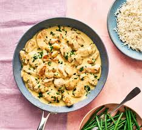

Butter Chicken Recipe
This recipe provides a guide to making rich and creamy Butter Chicken. It's a popular Indian dish featuring tender chicken in a spiced tomato and cream sauce.
Ingredients
- 500g boneless chicken thighs
- 2 tbsp butter
- 1 cup heavy cream
- 1 cup tomato puree
- 2 tbsp plain yogurt
- 1 tbsp garam masala
- 1 tsp turmeric
- 1 tsp chili powder
- 2 cloves garlic, minced
- 1 inch ginger, minced
- Salt to taste
- Fresh cilantro for garnish
Steps
- In a large bowl, marinate the chicken with yogurt, garam masala, turmeric, and chili powder. Let it sit for at least 30 minutes.
- In a pan, melt the butter and sauté the garlic and ginger until fragrant.
- Add the marinated chicken and cook until browned.
- Stir in the tomato puree and simmer for 15 minutes.
- Add the heavy cream, salt, and cook for another 10 minutes until the sauce thickens.
- Garnish with fresh cilantro and serve with rice or naan.